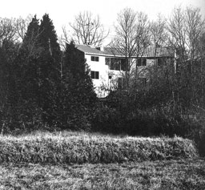
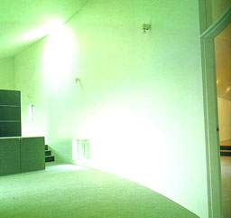

|
House at Kasama
Kasama, Ibaraki, 1980-1981, Toyo ItoGA Houses
A.D.A. EDITA Tokyo |
This house is situated on a steeply sloped wooded site 100 kilometres
north of Tokyo. The construction consists of a combination of
wood and concrete. The plan is T-shaped in order to avail the
house to sunlight and vistas and to organise all the required
functions such as a workshop and a gallery. Natural light enters
the rooms from different directions and splits the interior making
the character of space ambiguous. An example can be seen on the
photograph on the right.
|
 |